Clean Gang Decks, le guide
Tout ce qu'il faut savoir pour ouvrir tes boosters, construire ton deck et gagner tes combats. Chaque mécanique est montrée en image, directement dans le jeu.
Débuter
Ta première partie, du compte jusqu'au premier combat.
- Crée ton compte avec un pseudo et un mot de passe. Tu arrives directement dans le jeu.
- Ouvre ton booster gratuit dans Boosters : 5 cartes, et un nouveau booster toutes les 10 minutes.
- Construis ton deck dans Collection → Deck : il doit faire exactement 30 cartes. « Remplissage automatique » le complète pour toi.
- Entraîne-toi dans Combat contre le bot, sans rien risquer.
- Défie tes amis depuis Social → Joueurs et grimpe au classement du mois.
Les boosters
Chaque booster contient 5 cartes. Tu en reçois un gratuit toutes les 10 minutes. Pendant le compte à rebours, tu peux le débloquer tout de suite pour 50 crédits.
Les boosters achetés en boutique ne s'ouvrent pas tout de suite : ils se rangent derrière le booster gratuit, en pile. Passe la souris sur un booster de la pile pour voir son extension, clique dessus pour l'ouvrir.
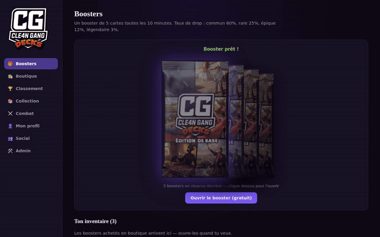
L'ouverture se fait en grand, au centre de l'écran. Clique sur la carte pour la retourner, puis encore pour passer à la suivante. Une carte épique ou légendaire s'annonce par un éclat de couleur.
Les cartes
Trois types
| Type | Ce qu'elle fait | Ce qui est écrit dessus |
|---|---|---|
| Serviteur | Se pose sur ton côté du plateau et peut attaquer à partir du tour suivant. | Coût (bleu), attaque (jaune), points de vie (rouge) |
| Sort | Produit un effet immédiat, puis disparaît : dégâts, soin, bonus d'attaque, destruction… Certains sorts combinent deux effets, par exemple −1 PV et +2 ATQ sur un serviteur. | Coût, et la valeur de l'effet en bas à droite |
| Arme | S'équipe sur ton héros, qui peut alors attaquer lui-même. | Coût, attaque, nombre d'utilisations |
En combat, le type est écrit en bas de chaque carte, et son effet est rédigé en clair en doré, au-dessus de sa description.
Raretés
| Rareté | Chance par carte | Exemplaires max par deck | Valeur en poussière |
|---|---|---|---|
| Commune | 60 % | 2 | 1 ✧ |
| Rare | 25 % | 2 | 2 ✧ |
| Épique | 12 % | 2 | 10 ✧ |
| Légendaire | 3 % | 1 | 250 ✧ |
Mots-clés
- Provocation
- Tant qu'un serviteur avec Provocation est en jeu, l'adversaire doit l'attaquer en premier. Il est entouré d'un bouclier.
- Charge
- Le serviteur peut attaquer dès le tour où il est posé.
- Daltonisme
- En attaquant, le serviteur a une chance (indiquée sur la carte) de se tromper de cible : il frappe alors au hasard un ennemi, un de ses alliés ou même son propre héros.
- Modifier l'ATQ et les PV
- Sort à double effet sur un serviteur au choix, allié ou ennemi : il change son attaque et ses points de vie en même temps, en plus ou en moins. Des PV qui tombent à 0 le détruisent.
- Armure
- Points de bouclier donnés à ton héros, affichés à gauche de ses PV. Les dégâts retirent l'armure d'abord, puis les PV.
- Cri de guerre
- Effet qui se déclenche quand le serviteur est posé : piocher une carte, soigner un allié, infliger des dégâts… S'il faut une cible, tu la choisis juste après avoir posé la carte.
- Endormissement
- Le serviteur ciblé, allié ou ennemi, s'endort 💤 : il ne peut plus attaquer pendant un ou plusieurs tours (indiqué sur la carte), puis se réveille. Existe en sort et en cri de guerre.
- Détruire une cible
- Détruit le serviteur de ton choix, allié ou ennemi, quels que soient ses PV et son armure. Existe en sort et en cri de guerre.
- Bouclier
- Le premier coup reçu par le serviteur est ignoré, puis le bouclier disparaît.
- Furie
- Le serviteur peut attaquer deux fois par tour 🌀.
- Rage
- Tant que le serviteur n'a pas tous ses PV, il gagne un bonus d'ATQ (indiqué sur la carte). Soigné complètement, il perd ce bonus.
- Silence
- Effet de sort (ou de cri de guerre, Râle d'agonie, piège) : le serviteur visé perd tous ses effets (Provocation, Bouclier, Furie, Camouflage, Toujours debout, Rage, aura, Râle d'agonie, endormissement) et revient à l'ATQ et aux PV max de sa carte. Les dégâts qu'il a subis restent.
- Toujours debout
- Tous les 2 tours passés en vie, le serviteur gagne un niveau : +1 ATQ et +1 PV (3 niveaux maximum). Protège-le avec des soins, un Bouclier ou des Provocations.
- Camouflage
- Le serviteur ne peut pas être ciblé par l'adversaire (attaques et sorts) tant qu'il n'a pas attaqué. Sa Provocation n'oblige pas à l'attaquer.
- Râle d'agonie
- Effet déclenché à la mort du serviteur 💀 : piocher, infliger des dégâts au hasard, soigner… Certains sorts peuvent donner ces mots-clés à tes serviteurs.
- Invocation
- Fait apparaître des jetons (petits serviteurs) sur ton plateau.
- Piège
- Sort posé face cachée 🪤 qui se déclenche pendant le tour adverse ; l'adversaire voit seulement qu'il y en a un.
- Aura
- Tant que le serviteur est en vie ✨, ses alliés (ou ses voisins) gagnent de l'ATQ.
- Combo
- Quand ce serviteur et son partenaire sont tous les deux sur ton plateau, une troisième carte apparaît (une fois par paire).
- Carte spéciale
- Introuvable dans les boosters : elle n'apparaît que grâce à un effet (cartes au hasard, combo…).
- Pioche
- Fait piocher une ou plusieurs cartes, en sort ou en cri de guerre. Avec un paquet vide, chaque carte manquante coûte de la fatigue.
- Mal d'invocation
- Un serviteur qui vient d'arriver attend le tour suivant pour attaquer, sauf s'il a Charge.
- Fatigue
- Quand ton paquet est vide, chaque pioche te coûte des PV : 1, puis 2, puis 3…
Ta collection
La catégorie Collection regroupe cinq onglets : Deck, Stats du deck, Codex, Désenchantement et Succès.
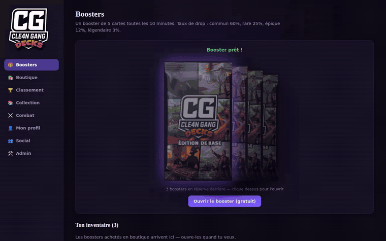
- Deck : clique sur une carte de ta collection pour l'ajouter, sur une carte du deck pour la retirer. Un deck fait exactement 30 cartes, avec au plus 2 exemplaires d'une même carte et 1 seul pour une légendaire. Tu peux enregistrer jusqu'à 12 decks, les modifier, les renommer, les supprimer et choisir celui que tu joues.
Pour t'y retrouver : des onglets par rareté, un filtre par type, un tri par coût de mana, et la courbe de mana de ton deck. Chaque carte affiche son effet. « Vider le deck » retire toutes les cartes pour repartir de zéro. - Stats du deck : l'analyse de ton deck en cours (courbe de mana, rôles des cartes), des conseils pour l'améliorer et des suggestions de cartes qui comblent ses manques ou créent une synergie. Après chaque combat, un bilan s'y ajoute : cartes les plus efficaces, cartes restées en main, mana utilisée. Le bouton 🤖 S'entraîner lance un combat contre le bot avec ton deck, sans risque ni récompense.
- Codex : toutes les cartes que tu as obtenues un jour restent visibles ici, même échangées ou désenchantées. Les autres apparaissent cachées, avec leur rareté.
- Désenchantement : les exemplaires en trop, au-delà de ce qu'un deck peut contenir, se transforment en poussière ✧.
- Succès : des objectifs à remplir, qui rapportent des récompenses. Tu peux en exposer sur ton profil.
Le combat
Deux héros à 30 PV. Le premier qui tombe à 0 perd.
Avant la partie : ta main de départ
Tu commences avec 4 cartes. Clique sur celles que tu veux remplacer, puis valide : elles sont reprises au hasard dans ton paquet.
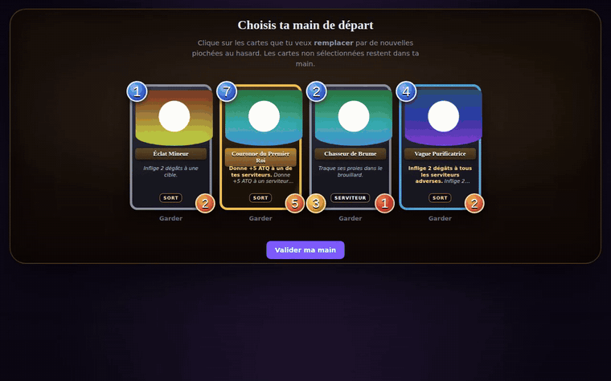
Ton tour
- Au début de chaque tour, tu gagnes 1 cristal de mana de plus (jusqu'à 10), ta mana est rechargée et tu pioches une carte.
- Ta main contient au plus 10 cartes : une carte piochée en trop est brûlée.
- Ton côté du plateau accueille au plus 7 serviteurs.
- Quand tu as fini, clique sur Fin du tour, sur le bord droit de la table.
- Chaque tour dure 1 minute. Un petit minuteur dans le bouton « Fin du tour » affiche les secondes restantes : il passe à l'orange à 15 s, au rouge à 10 s, et ton tour se termine tout seul à 0.
Poser une carte
Glisse la carte de ta main jusqu'à la table. Si tu as assez de mana, elle est jouée. Un simple clic, sans glisser, ouvre la carte en 3D pour la lire : la molette zoome, le double-clic recadre. Ça marche aussi pendant le tour adverse, et sur les serviteurs posés sur la table.
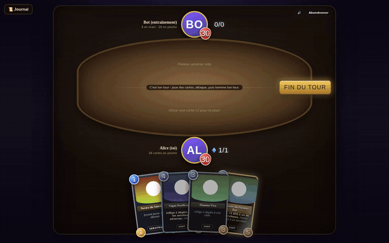
Un sort qui vise une cible (dégâts, soin, bonus) te demande ensuite de cliquer sur cette cible. Un sort de zone s'applique tout de suite.
Attaquer
Clique sur un de tes serviteurs prêt à attaquer (contour vert), puis sur sa cible : un serviteur adverse ou le héros adverse. Les deux s'infligent leurs dégâts en même temps : l'attaquant encaisse la riposte de sa cible.
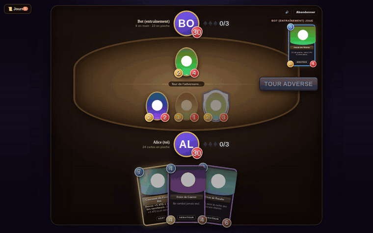
- Chaque serviteur attaque une fois par tour. Ensuite, une croix rouge apparaît quand tu le survoles.
- Si l'adversaire a un serviteur avec Provocation, il faut l'attaquer en premier.
- Avec une arme équipée, clique sur ton héros pour attaquer avec elle. Attaquer un serviteur te fait encaisser sa riposte.
Le journal de combat
Le bouton 📜 Journal, en haut à gauche, affiche chaque action en images, tour par tour : qui a joué quoi, qui a frappé qui, les dégâts en rouge, les soins en vert, les bonus en doré, et 💀 quand une carte est détruite. La carte jouée par l'adversaire s'affiche aussi deux secondes en haut à droite du plateau.
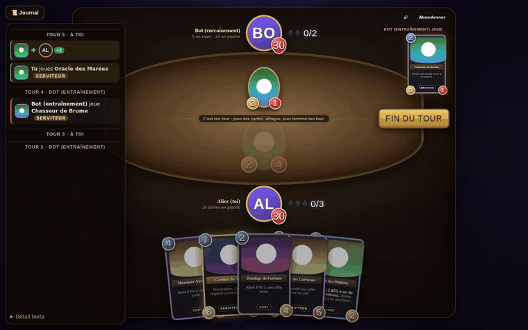
Les provocations
Clique sur ton propre héros pour ouvrir la roue de 6 provocations et en envoyer une à l'adversaire. Tu choisis lesquelles mettre dans ta roue depuis Mon profil, et d'autres s'achètent en boutique.
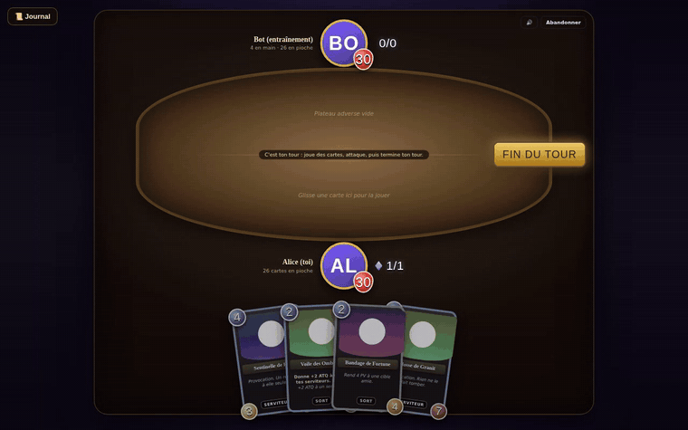
Fin de partie
Le combat s'arrête quand un héros tombe à 0 PV, ou quand un joueur abandonne. L'écran de victoire ou de défaite affiche tes récompenses, puis tu reviens au menu.
Classement et récompenses
Chaque combat contre un autre joueur rapporte des points de classement :
- Victoire : 25 points, et le double pour ta première victoire du jour. À partir de 3 victoires de suite, chaque victoire rapporte +10 en plus.
- Défaite : 5 points, si la partie a duré au moins 4 tours et que tu n'as pas abandonné.
- Une victoire rapporte aussi 20 poussières et 50 crédits (25 pour le perdant). Les combats contre le bot, l'histoire et les tournois ne comptent pas pour le classement.
| Rang | Points | Environ | Récompense en fin de mois |
|---|---|---|---|
| Bronze | 0 | — | — |
| Argent | 100 | 4 victoires | 50 ✧ |
| Or | 300 | 12 victoires | 100 ✧ |
| Diamant | 600 | 24 victoires | 200 ✧ |
| Maître | 1 000 | 40 victoires | 400 ✧ |
Une frise des rangs, dans Classement et dans Mon profil, montre ton rang actuel, ta position exacte et le nombre de victoires qu'il te reste pour chaque rang suivant. En fin de mois, le podium reçoit en plus 500 ✧, 250 ✧ et 100 ✧. Au nouveau mois, tu ne repars pas de zéro : tu reprends au début du rang en dessous.
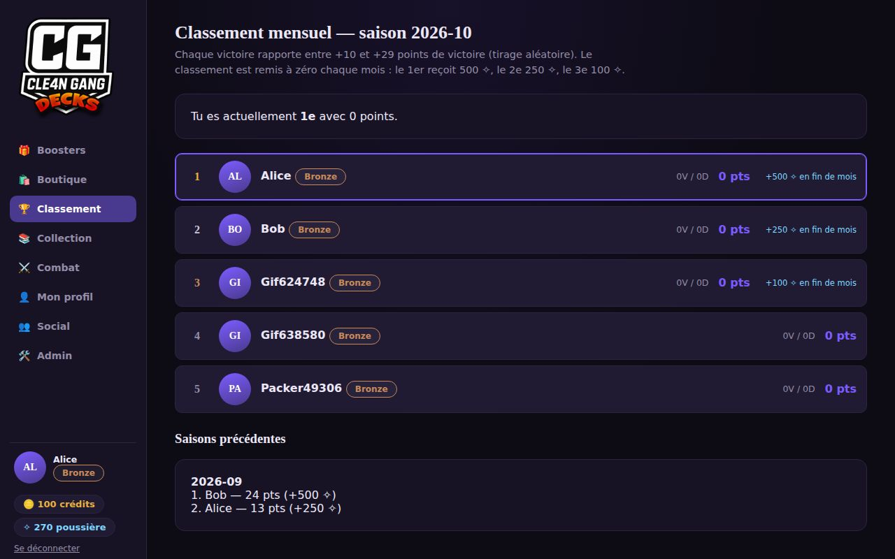
La boutique
Deux monnaies : les crédits 🪙 et la poussière ✧. Les crédits achètent des boosters, qui rejoignent ta pile dans Boosters. La poussière, gagnée en désenchantant et en remportant des combats, achète des provocations et des ornements pour ton avatar.
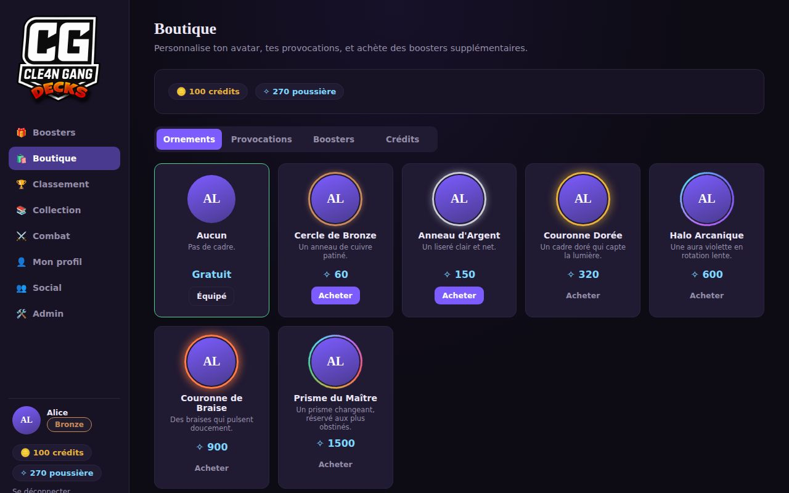
Le mode Histoire
Quand l'admin l'a ouvert, l'onglet 🗺️ Histoire permet d'affronter les boss de la ville, chapitre après chapitre, du voyou des ruelles jusqu'au chef suprême sur le trône. Chaque chapitre compte 3 combats : deux sbires, puis le boss, chacun tiré des cartes du jeu et plus coriace que le précédent. Chaque victoire rapporte de la poussière ou des crédits (un sbire rapporte moins que le boss, et rejouer un combat déjà gagné rapporte moins). Battre le boss termine le chapitre. Les chapitres ouvrent petit à petit : un chapitre pas encore ouvert est marqué « Bientôt disponible ».
Revoir un combat
Dans Combat → Historique des combats, chaque partie peut être revue action par action : lecture, pause, retour en arrière, vitesse ×1, ×2 ou ×4, et le détail de chaque étape.
Le tournoi
Quand un tournoi est organisé, l'onglet 🎖️ Tournoi apparaît dans le menu.
- Inscris-toi pendant que les inscriptions sont ouvertes. Il te faut un deck actif de 30 cartes : c'est lui que tu joueras.
- L'admin lance le tournoi à partir de 4 inscrits. L'arbre se crée au hasard ; si le nombre de joueurs n'est pas une puissance de 2, certains sont exempts et passent directement au tour suivant.
- Pour chaque match, les deux joueurs cliquent sur « ✋ Je suis prêt ». Le combat se lance tout seul dès que les deux sont prêts.
- Le vainqueur avance dans l'arbre, le perdant est éliminé. Après le combat, tu reviens sur l'onglet Tournoi.
- Le champion gagne un contour d'avatar exclusif, différent à chaque tournoi et jamais vendu en boutique. Il s'équipe dans la boutique.
Mon profil
Choisis un titre à afficher sous ton pseudo (dans le menu, au classement, sur ta fiche et en combat) et consulte tes statistiques de carrière. Les réglages de son, d'animations, de taille du texte et de notifications sont dans ⚙️ Options.
Ta page à toi : ton avatar, ton rang, une description de 150 caractères maximum et ta vitrine de 3 cartes choisies dans ta collection. Les autres joueurs voient ta description et ta vitrine sur ta fiche.
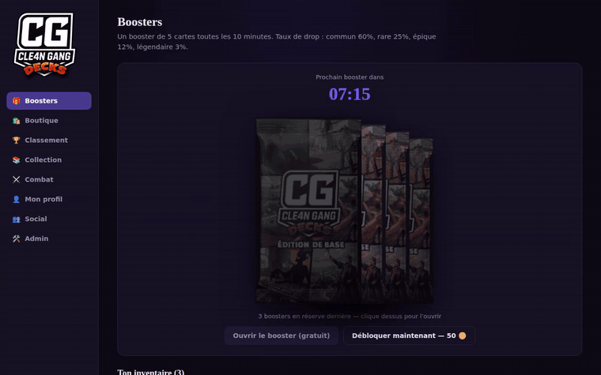
Une carte qui quitte ta collection, échangée ou désenchantée, sort automatiquement de ta vitrine.
Questions fréquentes
Je n'arrive pas à poser une carte.
Vérifie que c'est ton tour, que tu as assez de mana (le coût est dans le rond bleu) et que ton plateau n'a pas déjà 7 serviteurs. Une carte trop chère apparaît grisée dans ta main.
Mon serviteur ne peut pas attaquer.
Il vient peut-être d'être posé : il attaquera au prochain tour, sauf s'il a Charge. Ou il a déjà attaqué ce tour-ci : une croix rouge apparaît quand tu le survoles. Laisse la souris dessus pour lire la raison.
Je ne peux pas attaquer le héros adverse.
Un serviteur adverse a Provocation : il faut d'abord le détruire.
Comment supprimer ou modifier un deck enregistré ?
Dans Collection → Deck, section « Mes decks » : « Modifier » le recharge dans le constructeur, « Supprimer » l'efface après confirmation.
Mon serviteur a frappé mon propre héros !
Il a le mot-clé Daltonisme : à chaque attaque, il a une chance de se tromper de cible.
Que faire de mes cartes en double ?
Garde-les pour des échanges, ou transforme-les en poussière dans Collection → Désenchantement.
Mon deck n'est pas accepté.
Il doit faire exactement 30 cartes, avec au plus 2 exemplaires d'une carte et 1 seul pour une légendaire. « Remplissage automatique » complète un deck incomplet.
Le combat contre le bot compte-t-il au classement ?
Non. Le bot sert à s'entraîner : seules les victoires contre d'autres joueurs rapportent des points.
Notes de patch
Toutes les nouveautés et corrections du jeu, de la plus récente à la plus ancienne.
6 octobre 2026
Nouvel écran de fin de combat
- Nouveau À la fin d'un combat, tes crédits et ta poussière défilent jusqu'à leur nouveau montant, ta barre d'XP se remplit sous tes yeux, avec une fanfare et des confettis à chaque niveau gagné (et la récompense du niveau), puis tes défis du jour se cochent un par un.
- Amélioré Clique sur le panneau pour tout afficher d'un coup. Avec « Animations réduites » (Options), tout s'affiche directement. Les sons du passage de niveau et du défi réussi sont personnalisables par l'admin (Admin → Contenu).
6 octobre 2026
Puzzle du jour, Bagarre de la semaine et cartes brillantes
- Nouveau Puzzle du jour (Jouer → Puzzle) : une situation de combat, la même pour tout le monde, à gagner pendant ce tour-ci. Chaque puzzle est vérifié par le jeu : il a toujours une solution, et attaquer simplement la tête ne suffit pas. Réessais illimités ; à la première réussite du jour : +50 🪙, +25 ✧ et de l'XP, et un booster tous les 7 jours de suite. On voit combien de joueurs l'ont réussi. « Voir la solution » est possible, mais sans récompense ce jour-là.
- Nouveau Bagarre de la semaine (Jouer → Bagarre) : un combat contre le bot avec une règle spéciale qui change chaque lundi — Grande braderie (tout coûte 1 mana de moins), Mini-decks (15 cartes), Retour aux sources (que des communes), Héros géants (50 PV), Démarrage en trombe (5 mana dès le début), Que du lourd (que des rares et mieux). Première victoire de la semaine : 1 booster + 50 🪙, puis +15 ✧ par victoire.
- Nouveau Cartes brillantes ✨ : une version rare des cartes, avec un reflet arc-en-ciel animé et des particules. Chaque carte de booster a une petite chance de sortir brillante (2 % à 6 % selon la rareté), ou fabrique-la avec de la poussière (100 / 200 / 400 / 800 ✧) en cliquant sur une carte de ta collection. Elle brille partout : collection, deck et combat (ton adversaire la voit aussi).
- Correctif En enchaînant vite deux combats (« Manche suivante » en Survie, « Combat suivant » en Draft…), le nouveau combat pouvait ne plus répondre aux clics au bout d'une minute.
- Correctif Un héros avec plus de 30 PV (boss de la Survie) retombait à 30 PV quand il se soignait.
6 octobre 2026
Mode Draft, mode spectateur, avatar recadré et info-bulles
- Nouveau Mode Draft (Combat → Draft) : choisis 1 carte parmi 3, trente fois de suite, sans avoir besoin de posséder les cartes. Les choix n° 1, 10, 20 et 30 ne proposent que des cartes rares ou mieux. Affronte ensuite le bot, de plus en plus fort, jusqu'à 3 défaites (ou 12 victoires). Crédits, poussière, boosters et un titre selon tes victoires. Entrée gratuite une fois par jour, puis 150 crédits. Top 3 des meilleurs Drafts.
- Nouveau Mode spectateur : regarde en direct les combats de tes amis et ceux du tournoi (Combat → En direct, ou « 👁 Regarder » à côté d'un ami en combat). Les cartes en main restent cachées. Les joueurs voient combien de personnes les regardent ; tu peux refuser les spectateurs dans les Options.
- Nouveau Changer d'avatar : un vrai bouton, puis un recadrage en cercle (glisser pour placer, curseur ou molette pour zoomer).
- Nouveau Info-bulles des mots-clés : survole « Provocation », « Charge », « Rage »… sur une carte pour voir ce qu'ils font. Désactivables dans les Options.
- Amélioré Chargements animés à la place des « Chargement… », et léger fondu en changeant de page.
- Correctif Abandonner un combat contre le bot affichait « Égalité » au lieu de « Défaite ».
6 octobre 2026
Nouvelle interface : accueil, menu, profil, deck et vitrine du jour
- Nouveau Page d'accueil sur PC : ton niveau, les boutons Jouer et Blitz, ton booster gratuit, ta Survie en cours, les défis du jour, l'objectif communautaire et tous les modes de jeu.
- Nouveau Menu réorganisé : un gros bouton « Jouer », puis Jouer / Collection / Boutique / Social. Mon profil (clic sur ton avatar), Options, Wiki et Admin sont en bas.
- Nouveau Page Combat en tuiles : Classé, Blitz, Survie, Histoire, Tournoi, Événements et Entraînement, chacun avec son bouton.
- Nouveau Mon profil en onglets : Profil, Personnalisation (bannière, titre, provocations) et Statistiques.
- Nouveau Constructeur de deck sur deux colonnes (écrans larges) : ta collection à gauche, ton deck toujours visible à droite (clic sur une carte du deck pour la retirer).
- Nouveau Vitrine du jour en haut de la Boutique : un booster, une bannière et une provocation à -25 %, un achat par article. Elle change tous les jours à minuit.
- Nouveau Récompenses de niveau : les 10 prochaines sont visibles dans Mon profil, et de nouveaux contours (niveaux 35, 75 et 100) et bannières (niveaux 12, 45 et 60) sont à gagner.
- Nouveau Les crédits et la poussière s'animent quand ils changent.
- Correctif Les contours de niveau (dont l'Anneau d'émeraude du niveau 10) ne s'affichaient pas.
6 octobre 2026
Survie, Blitz, objectif communautaire, favoris, bannières et succès secrets
- Nouveau Mode Survie (Combat → Survie) : un deck de 30 cartes tiré au hasard, impossible à changer ; des manches contre le bot de plus en plus dures ; tes PV sont conservés (+5 après chaque victoire). Pause pendant ton tour (⏸) ou entre deux manches, et pause automatique si tu fermes le jeu. Top 3 des meilleures séries, récompenses toutes les 5 manches, et les combats comptent pour les défis du jour.
- Nouveau Mode Blitz : tours de 20 secondes et 3 cristaux de mana dès le départ, contre un joueur ou contre le bot. Pas de points de classement.
- Nouveau Objectif communautaire : chaque lundi, un objectif tiré au hasard pour tous les joueurs. Atteint, il rapporte à chaque participant un booster, 100 crédits et la bannière « Esprit de gang ».
- Nouveau Cartes favorites : l'étoile ☆ sur une carte, et le filtre « ★ Favoris » dans le Codex et le constructeur de deck.
- Nouveau Partager un deck en image : bouton « 🖼️ Partager en image » dans le constructeur (cartes, courbe de mana, style conseillé), à télécharger ou copier dans Discord.
- Nouveau Bannières de profil : le fond de ta fiche joueur. En boutique, en tournoi (vainqueur et finaliste), avec les succès secrets et l'objectif communautaire. À choisir dans Mon profil.
- Nouveau 100 succès secrets : cachés jusqu'à ce que tu les débloques (onglet Succès), avec crédits, poussière, et parfois une bannière ou un titre.
6 octobre 2026
Toujours debout, aperçu des dégâts, appli et notifications
- Nouveau Mot-clé Toujours debout : tous les 2 tours passés en vie, le serviteur gagne un niveau (+1 ATQ / +1 PV), jusqu'à 3 niveaux. Ses étoiles ⭐ et son aura dorée montrent son niveau.
- Nouveau Aperçu des dégâts : avec un attaquant sélectionné, survole une cible pour voir les PV restants des deux côtés et un 💀 si l'un meurt. Sur téléphone, l'aperçu s'affiche directement sur chaque cible.
- Nouveau Mode concentration sur téléphone : en combat, seuls le plateau et ta main restent à l'écran. Le menu ☰ (ou un glissé vers le bas depuis le haut) donne le journal, le son, le plein écran, le signalement de bug et l'abandon. Il se désactive dans ⚙️ Options.
- Nouveau Appli installable et notifications push : « C'est ton tour », « Défi reçu », « Ton match de tournoi est prêt », « Proposition d'échange », même jeu fermé. Sur iPhone : Safari → Partager → « Sur l'écran d'accueil », puis active les notifications dans ⚙️ Options.
- Nouveau Mot-clé Rage : bonus d'ATQ tant que le serviteur est blessé (gemme d'attaque orange qui pulse).
- Nouveau Effet Silence 🔇 : retire tous les effets d'un serviteur, allié ou ennemi. Utilisable en sort, cri de guerre, Râle d'agonie et piège.
- Nouveau Constructeur de deck : menu Extension pour n'afficher que les cartes d'une seule extension.
- Amélioré Les statistiques de carrière (victoires, séries, adversaires, carte la plus jouée) ne comptent plus que les combats contre de vrais joueurs : ni le bot, ni l'entraînement, ni l'Histoire, ni les boss.
6 octobre 2026
Combos, cartes surprises et synergies
- Nouveau Cartes au hasard : certaines cartes te donnent des cartes tirées au hasard, parfois des cartes spéciales introuvables dans les boosters.
- Nouveau Combos 🔗 : quand deux serviteurs précis sont ensemble sur le plateau, un troisième apparaît.
- Amélioré Synergies : dans le constructeur de deck, les cartes qui vont bien avec ton deck s'illuminent, avec la raison (combo en doré).
- Correctif L'onglet Histoire (et Tournoi) n'apparaissait pas toujours après la connexion.
5 octobre 2026
Niveaux, défis du jour et cartes qui évoluent
- Nouveau Niveaux de compte, sans limite : de l'XP pour chaque combat, chaque booster ouvert, chaque succès et chaque défi réussi. Chaque niveau donne une récompense : crédits, poussière, booster, titre, des contours exclusifs aux niveaux 10, 25 et 50, puis un titre de prestige tous les 50 niveaux.
- Nouveau Défis du jour : 3 défis différents chaque jour pour chaque joueur, récompensés en crédits ou en XP.
- Nouveau Cartes qui évoluent : plus tu joues une carte, plus son cadre devient prestigieux (Bronze à 10 parties, Argent à 30, Or à 75, Légende à 150), avec de la poussière à chaque palier.
- Nouveau Equilibrium (admin) : simulateur qui joue des centaines de parties pour mesurer l'impact d'une carte.
- Amélioré Combat sur smartphone en mode paysage.
5 octobre 2026
Invocation, pièges, auras et reprise de combat
- Nouveau Invocation : des cartes font apparaître des jetons (petits serviteurs), en sort, en cri de guerre ou en Râle d'agonie.
- Nouveau Pièges 🪤 : un sort posé face cachée, qui se déclenche au tour adverse (quand un ennemi attaque, pose un serviteur ou lance un sort). L'adversaire voit seulement qu'un piège est en place.
- Nouveau Auras ✨ : un serviteur qui donne de l'ATQ à ses alliés (ou à ses voisins) tant qu'il est en vie.
- Nouveau Flèche de ciblage quand une cible est attendue, et bouton 🐞 Signaler un bug en combat et dans les Options.
- Amélioré Reprendre son combat : si tu quittes ou recharges la page, tu retrouves ta partie en revenant (90 secondes pour revenir, sinon défaite par forfait).
- Correctif Les boutons « Annuler la sélection » et « Poser sans l'effet » étaient parfois impossibles à cliquer, ce qui bloquait les attaques.
4 octobre 2026
Options, notifications, titres et carrière
- Nouveau Page ⚙️ Options : volume de la musique et des effets séparés, vitesse des animations (réduites, normales, rapides), taille du texte.
- Nouveau Notifications quand l'onglet est en arrière-plan : « C'est ton tour », « Défi reçu », « Ton match de tournoi est prêt ».
- Nouveau Titres sous le pseudo, débloqués par la carrière, les succès et les tournois.
- Nouveau Statistiques de carrière dans Mon profil : taux de victoire, plus longue série, carte la plus jouée, adversaire favori, bête noire.
- Amélioré Combat sur téléphone : plateau compact et main en éventail en bas de l'écran.
4 octobre 2026
Un classement plus accessible
- Amélioré Paliers abaissés : Argent 100, Or 300, Diamant 600, Maître 1 000 points.
- Amélioré Points fixes : 25 par victoire (doublés pour la première du jour), +10 en série dès 3 victoires, et 5 points pour une défaite jouée jusqu'au bout.
- Nouveau Frise des rangs : vois ton rang actuel et combien de victoires il te reste pour chacun des rangs suivants.
- Nouveau Récompense de fin de mois selon le rang atteint, et remise à zéro douce : on repart au début du rang en dessous.
4 octobre 2026
Mode Histoire, replays et nouveaux mots-clés
- Nouveau Mode Histoire : 8 chapitres, un boss par chapitre tiré des cartes du jeu, difficulté croissante, poussière ou crédits à chaque victoire.
- Nouveau Replays : revois tes combats action par action dans Combat → Historique.
- Nouveau Mots-clés Bouclier, Furie, Camouflage et Râle d'agonie ; des sorts peuvent les donner à tes serviteurs.
- Nouveau Entrée spéciale des légendaires : la carte apparaît en grand dans un halo doré avant de plonger sur la table.
- Amélioré Mode Histoire : 3 combats par chapitre (2 sbires puis le boss), et des chapitres qui ouvrent petit à petit.
- Nouveau Effets cumulés : un serviteur peut déclencher jusqu'à 3 effets à la pose (ex. endormir un ennemi + piocher), en plus de ses mots-clés comme Furie.
4 octobre 2026
Le tournoi
- Nouveau Onglet Tournoi : inscriptions, arbre à élimination directe, bouton « Je suis prêt » pour lancer chaque combat, et un contour d'avatar exclusif pour le champion, différent à chaque tournoi.
- Nouveau Recherche d'une carte par son nom dans le constructeur de deck.
- Correctif Quand une carte change de rareté (par exemple rare → légendaire), les exemplaires en trop sortent tout de suite des decks : complète ton deck s'il passe sous 30 cartes.
- Correctif Le panneau admin ne s'ouvre plus avec un code faux.
3 octobre 2026
Stats du deck, entraînement, nouveaux effets et minuteur
Collection
- Nouveau Stats du deck : analyse de ton deck, conseils, suggestions de cartes pour une meilleure synergie, et bilan détaillé de chaque combat.
- Nouveau Bot d'entraînement : depuis le constructeur de deck, teste ton deck contre le bot ; à la fin, le bilan du combat t'attend.
Cartes
- Nouveau Détruire une cible : un sort, ou un cri de guerre de serviteur, détruit le serviteur de ton choix, quels que soient ses PV et son armure.
- Nouveau Endormissement : un sort, ou un cri de guerre de serviteur, endort le serviteur de ton choix. Il ne peut plus attaquer pendant un ou plusieurs tours, avec 💤 au-dessus de lui, puis se réveille tout seul.
Combat
- Amélioré La mèche est remplacée par un petit minuteur dans le bouton « Fin du tour » : plus discret, il ne recouvre plus rien sur la table.
- Correctif Pendant les 20 dernières secondes du tour, le compte à rebours cachait la consigne « Choisis une cible… » et les messages d'erreur.
- Correctif Un sort sans cible se joue toujours au clic ; un ciblage resté en attente est annulé à la fin du tour ; le jeu n'est plus gardé en cache après une mise à jour.
2 octobre 2026
La mèche, l'armure du héros et le trailer
Combat
- Nouveau La mèche : chaque tour dure 1 minute. Dans les 20 dernières secondes, une mèche se consume sur la table ; à la fin, ton tour se termine tout seul.
- Nouveau Armure du héros : l'armure d'une carte s'ajoute maintenant à ton héros, en points de bouclier affichés à gauche de ses PV. Les dégâts retirent l'armure d'abord, puis les PV. Nouvel effet de sort « Donner de l'armure », aussi disponible en cri de guerre.
- Amélioré Pendant le tour adverse, tes cartes restent bien lisibles (elles ne sont plus grisées) et s'ouvrent d'un clic.
- Amélioré Dans le journal de combat, clique sur une vignette pour voir la carte en grand.
Jeu
- Nouveau Clique sur le logo pour regarder le trailer du jeu.
- Nouveau Crédits de fin de combat entre joueurs : 50 pour le gagnant, 25 pour le perdant (à partir de 4 tours, rien pour un abandon).
- Amélioré Le coût en mana est bien visible sur chaque carte du deck, de la collection et du codex.
- Correctif L'écran de fin de partie pouvait s'afficher sans les récompenses.
1er octobre 2026
Nouveaux effets et nouveau constructeur de deck
Cartes
- Nouveau Pioche : un sort qui fait piocher le nombre de cartes de ton choix.
- Nouveau Cri de guerre : un serviteur peut déclencher n'importe quel effet de sort quand il est posé (piocher, soigner un allié, infliger des dégâts…).
- Nouveau Daltonisme : en attaquant, le serviteur peut se tromper de cible et frapper au hasard un ennemi, un allié ou son propre héros.
- Nouveau Modifier l'ATQ et les PV : un sort à double effet, par exemple −1 PV et +2 ATQ.
Collection et interface
- Amélioré Constructeur de deck : onglets par rareté, filtre par type, tri par coût de mana, courbe de mana, bouton « Vider le deck », effets affichés sur chaque carte.
- Amélioré Ton profil, tes crédits et ta poussière sont en haut du menu, qui reste visible quand tu fais défiler la page.
- Nouveau L'onglet Wiki dans le jeu.
- Amélioré En combat, clique sur une carte ou un serviteur pour le lire, même hors de ton tour.
- Correctif Impossible de supprimer un deck enregistré (et sept autres boutons qui ne réagissaient pas, surtout dans l'admin).
Fin septembre 2026
La grande refonte
Combat
- Nouveau Nouveau plateau de combat : table en bois, médaillons de serviteurs, grosses gemmes de stats.
- Nouveau Les attaquants chargent vers leur cible ; les dégâts tombent au moment de l'impact.
- Nouveau Journal de combat visuel, tour par tour, et carte jouée par l'adversaire affichée deux secondes.
- Amélioré Le bot joue une action à la fois. Type et effet de chaque carte écrits en clair. Croix rouge sur un serviteur qui a déjà attaqué.
- Amélioré Un défi accepté amène les deux joueurs directement sur le plateau ; fin de partie avec retour au menu.
- Correctif Certaines cartes impossibles à poser malgré assez de mana, curseur de texte sur le plateau, « Nouveau rang : [object Object] ».
Boosters, profil et menus
- Nouveau Ouverture des boosters en grand ; boosters achetés rangés en pile derrière le gratuit ; un son par rareté.
- Nouveau Mon profil : description de 150 caractères et vitrine de 3 cartes.
- Amélioré Menu rangé par catégories (Collection, Social) et par ordre alphabétique. Zoom à la molette dans l'aperçu 3D des cartes.
- Correctif L'onglet Deck plantait après la suppression d'une carte ; l'éclat doré du pack opening se rejouait au hasard ; le fond du pack opening clignotait entre les cartes.
Social
La catégorie Social regroupe Joueurs et Échanges.
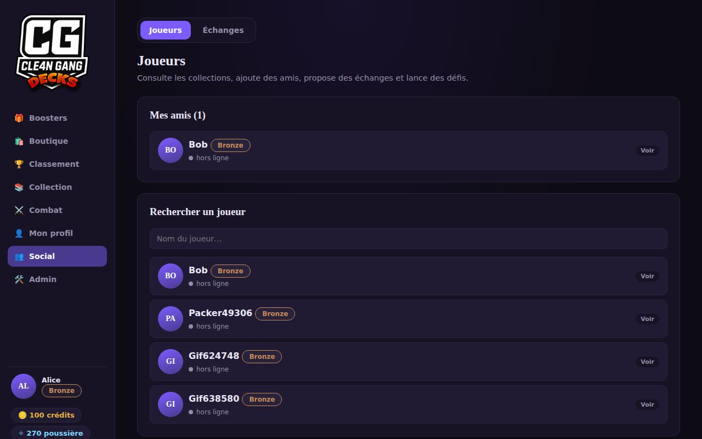
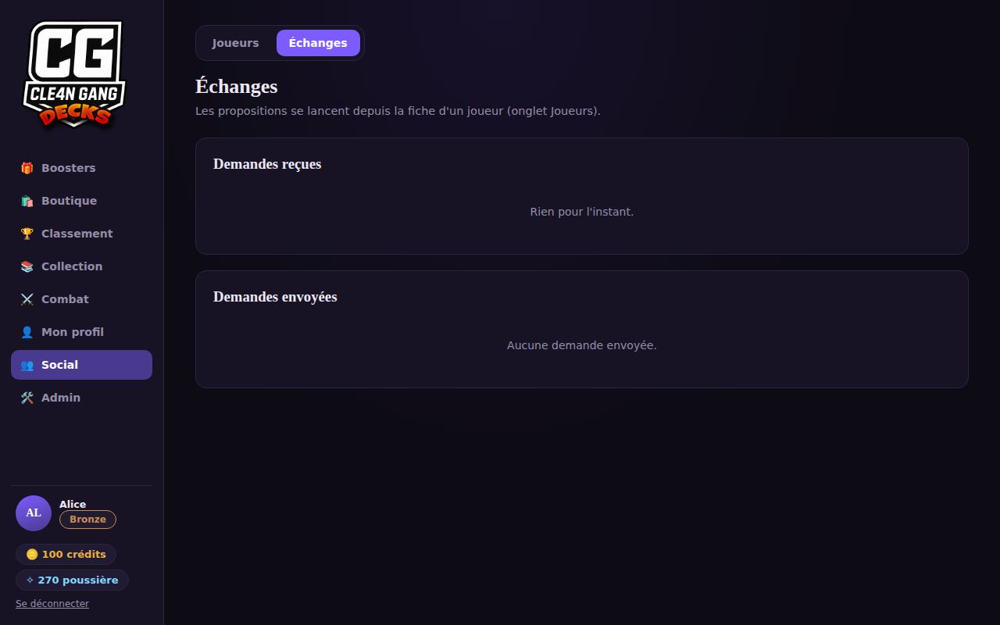